시나리오 - 데모(Demonstration)
이 시나리오는 NASA Operational Simulator for Space Systems(NOS3)에 대한 전체적인 개요를 제공하기 위해 만들어졌습니다. 이 시나리오는 NOS3 내에서 비행 소프트웨어(FSW), 지상 소프트웨어(GSW), 시뮬레이션 간의 상호작용을 보여줍니다. 또한 다양한 사용 사례를 다루기 위해 앞으로 개발되어 환경에 추가될 다른 시나리오들의 템플릿 역할도 합니다.
이 시나리오는 2025년 8월 29일에 마지막으로 업데이트되었으며, 당시 dev 브랜치(커밋 [422f66ec])를 기반으로 작성되었습니다.
학습 목표
이 시나리오를 마치면 다음을 할 수 있게 됩니다:
FSW, GSW, 시뮬레이터를 포함해 NOS3 실행하기.
COSMOS를 이용해 명령을 보내고 텔레메트리 수신하기.
시뮬레이션된 하드웨어 컴포넌트와 상호작용하기.
FSW, GSW, 시뮬레이터 간의 상호작용이 성공적인지 검증하기.
NOS3 시나리오의 기본 아키텍처 이해하기.
사전 준비 사항
시나리오를 실행하기 전에 다음 단계를 완료하세요:
이 시나리오에는 추가적인 파일 변경이나 특별한 설정이 필요하지 않습니다.
실습 과정
NOS3 저장소의 최상위 경로로 이동한 터미널에서:
make
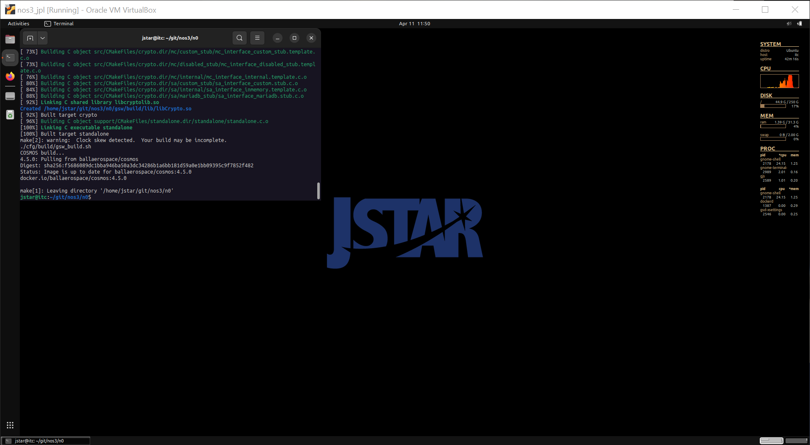
make launch
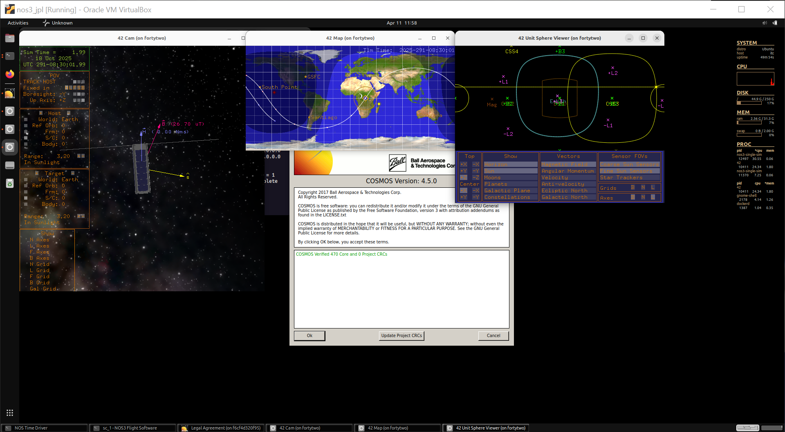
사용하기 편하도록 창들을 정리하세요:
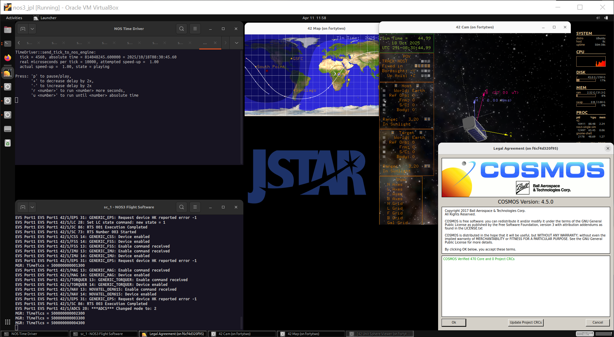
이제 COSMOS 지상 소프트웨어를 시작합니다:
나타나는 NOS3 Launcher 창에서
OK버튼을 클릭한 뒤, 왼쪽 상단의COSMOS버튼을 클릭하세요.이 NOS3 Launcher는 최소화해도 되지만, 닫지는 마세요.
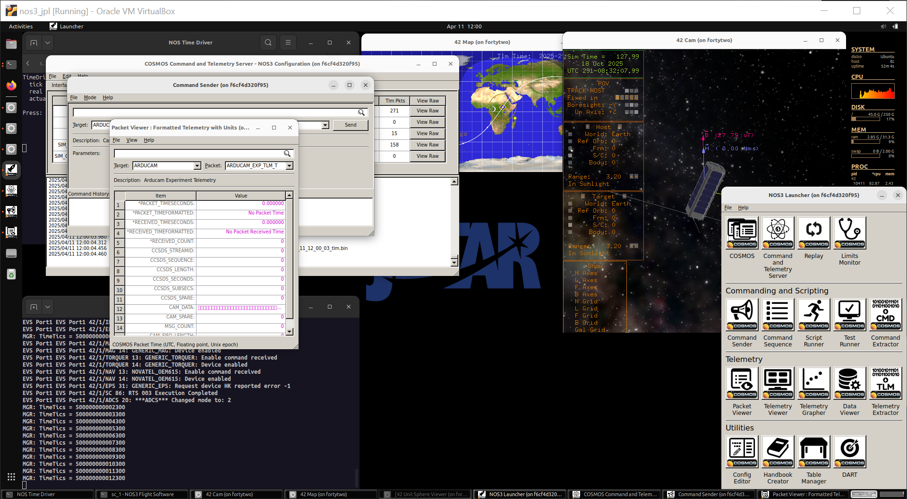
기본적으로 우리는 sun-safe(태양 안전) 모드로 진입합니다. 여러 가지 방식으로 이를 확인할 수 있습니다:
FSW 콘솔에서:
시작 중에 이벤트가 발생하면서 많은 로그가 출력되므로, 메시지를 보려면 터미널을 위로 스크롤해야 할 수 있습니다.
위성이 안정 상태(steady state)에 도달하면 초기화 이후 콘솔 출력이 잦아듭니다.
Mode 2가 sun-safe 모드입니다:
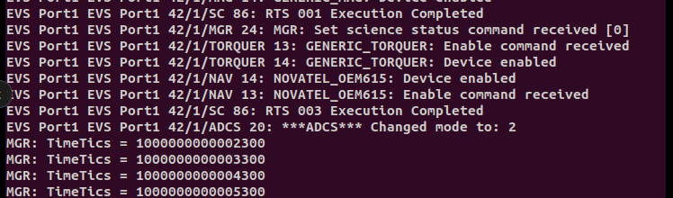
GSW 텔레메트리에서:
COSMOS Packet Viewer를 사용하면 원하는 Target과 Packet을 선택해 보고된 내용을 확인할 수 있습니다.
텍스트가 분홍색으로 표시된다면, 데이터를 아직 수신하지 못했거나 데이터가 오래되어 “stale”(오래된 상태) 상태임을 의미합니다.
텔레메트리 패킷
GENERIC_ADCS, 텔레메트리 포인트MODE는 위성이 현재 어떤 모드에 있는지를 나타냅니다: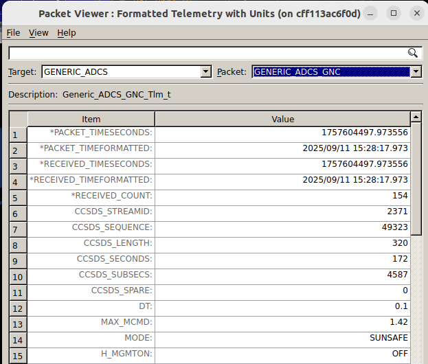
42에서 시각적으로:
42 Cam 창 안에서 클릭 후 드래그하면 위성 주변을 회전하며 볼 수 있습니다.
스크린샷에서 볼 수 있듯이, Sunsafe 모드는 위성의 +x축(b1)을 태양 벡터(s)와 정렬시킵니다.
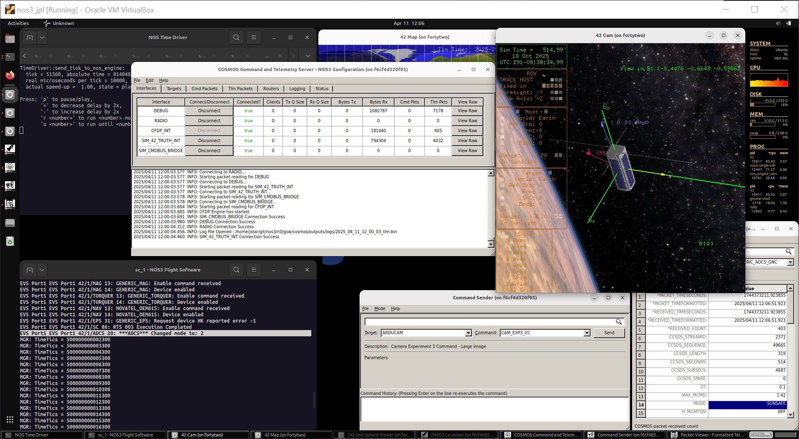
위성에 명령 보내기
위성에 명령을 보낼 수 있는지 확인해 봅시다:
CFS
CFE_ES_NOOP명령은 FSW 콘솔에 보기 좋은 출력을 남기므로, 이를 통해 쉽게 확인할 수 있습니다.이를 보려면 FSW 콘솔을 창 하단으로 다시 스크롤해야 할 수 있습니다.
또한, 해당 애플리케이션에 속한 명령 카운터가 텔레메트리에서 증가하는지(텔레메트리 패킷
CFS, 텔레메트리 포인트CMDCOUNTER) 살펴봄으로써 확인할 수 있습니다:
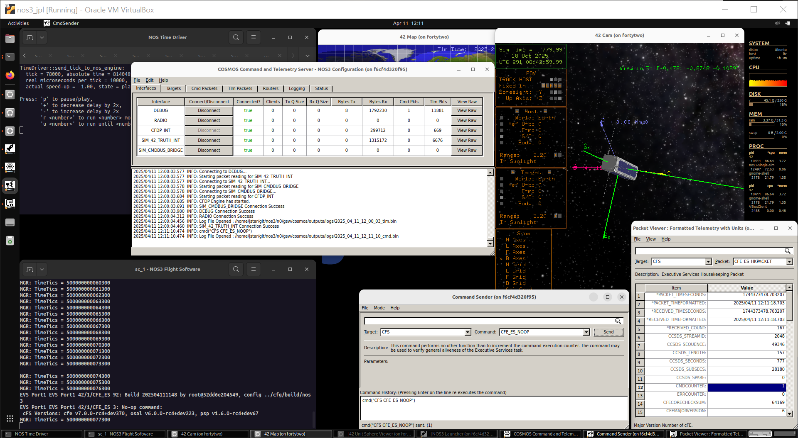
방금 보낸 명령은 DEBUG 인터페이스를 통해 전송되었음에 유의하세요:
위 이미지에서 COSMOS Command and Telemetry Server의
Bytes Tx열을 통해 이를 확인할 수 있습니다.이 DEBUG 인터페이스는 위성에 물리적으로 직접 연결된 것과 같은 상황을 흉내 냅니다. 개발과 테스트에는 유용하지만, 실제 상황과는 다릅니다.
이번엔 무선(radio)이 송신하도록 명령해 봅시다:
일반적으로 위성 무선은 항상 명령을 수신 대기하지만, 활성화하지 않으면 송신은 하지 않습니다.
Command Sender에서
CFS의TO_ENABLE_OUTPUT명령을 사용하도록 변경해봅시다:기본 인자값인
DEST_IP‘radio_sim’과DEST_PORT‘5011’을 그대로 사용하면 됩니다.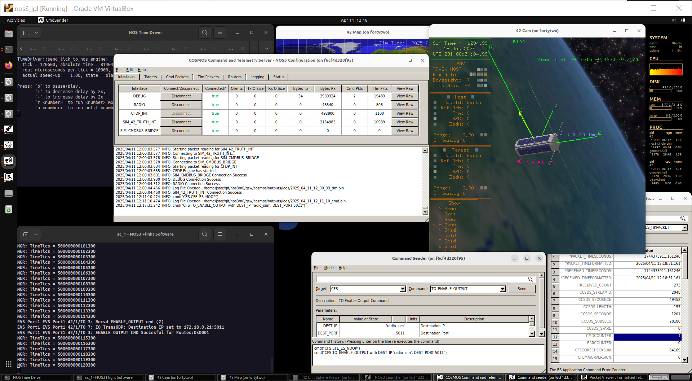
COSMOS Command and Telemetry Server에서
Bytes Rx는 늘어나고 있지만Bytes Tx는 늘어나지 않는다는 점에 유의하세요.이는 표준 CFS 타겟이 디버그 인터페이스를 사용하기 때문입니다.
이번에는 CFS_RADIO 타겟을 이용해 또 다른 NOOP을 보내봅시다:
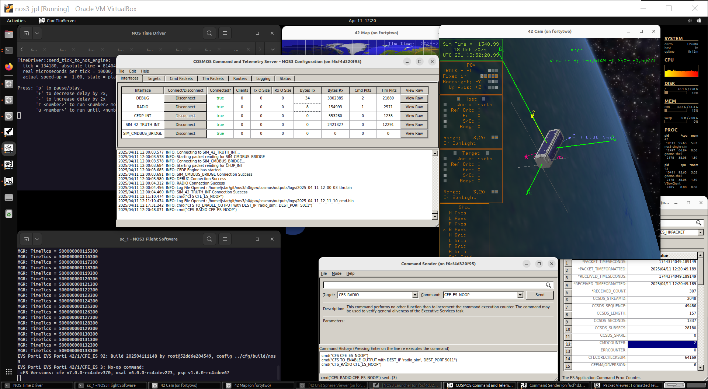
이제 COSMOS Command and Telemetry Server에서 예상대로 동작하는 것을 볼 수 있습니다.
디버그 인터페이스와 일치하는 무선(radio) 텔레메트리를 실제로 수신하고 있는지 확인해봅시다:
COSMOS NOS3 Launcher(세 번째 줄, 첫 번째 칸)를 통해 다른 Packet Viewer 창을 열어
CFS_RADIO패킷으로 이동한 뒤,CFS(디버그) 패킷의 값과 비교해보세요.
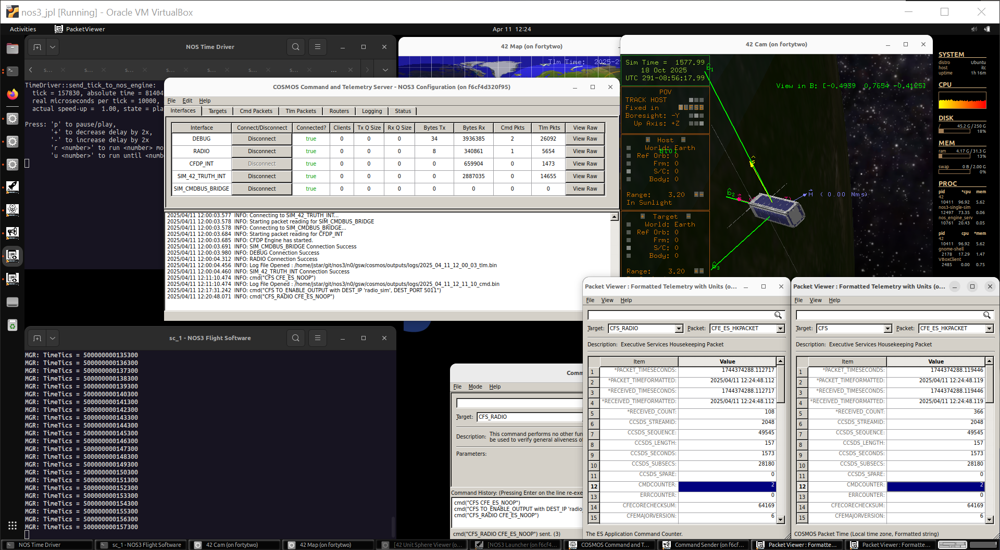
Sample(샘플) 컴포넌트
샘플 계측기(instrument payload)를 명령할 수 있는지 확인해봅시다:
이는 표준 NOS3 컴포넌트로, FSW, GSW, 그리고 42 동역학 제공자(dynamics provider)와 대화하는 시뮬레이터가 함께 실행되고 있음을 의미합니다.
터미널 창 오른쪽의 드롭다운 화살표를 이용해 터미널 탭을
sc_1 - Sample Sim으로 바꾸고 크기를 조정하세요.또한 Packet Viewer를
SAMPLE의SAMPLE_HK_TLM패킷으로 바꾸고, Command Sender로SAMPLE의SAMPLE_NOOP_CC를 보낼 준비를 하세요.
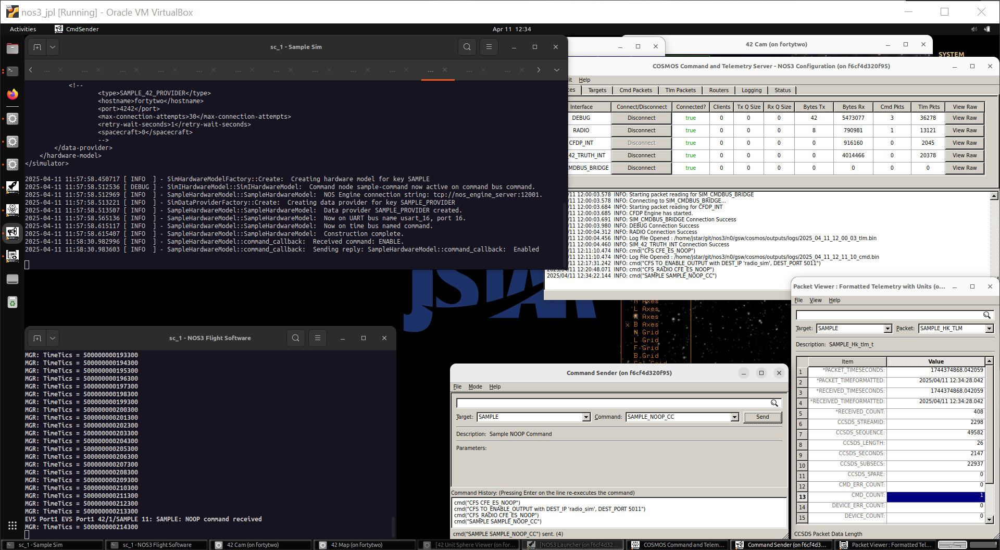
FSW 콘솔에서, 그리고
CMD_COUNT증가를 관찰함으로써 명령이 성공적으로 전송된 것을 확인할 수 있지만, 시뮬레이터에는 아무것도 나타나지 않습니다:이는 NOOP, 즉 No Operation(아무 동작도 하지 않음) 명령 자체 때문입니다.
NOOP은 cFS 애플리케이션 전반에서 표준적으로 쓰이며, 단순히 해당 애플리케이션이 살아 있고 명령을 수신 대기 중임을 증명할 뿐입니다.
하지만 이 NOOP 명령은 FSW 애플리케이션 이외의 어떤 것과도 상호작용하지 않습니다.
Sample HK 텔레메트리를 보면
DEVICE_*로 시작하는 일련의 텔레메트리 포인트가 있음을 눈치채셨을 겁니다:이는 애플리케이션이 장치(device) 자체와 통신하는 것과 관련된 값들입니다.
샘플 계측기를 활성화하기 전에는 Packet Viewer의 데이터가 분홍색으로 표시됩니다. 이는 데이터를 아직 수신하지 못했거나 데이터가 오래되어 “stale”(오래된) 상태임을 나타냅니다:
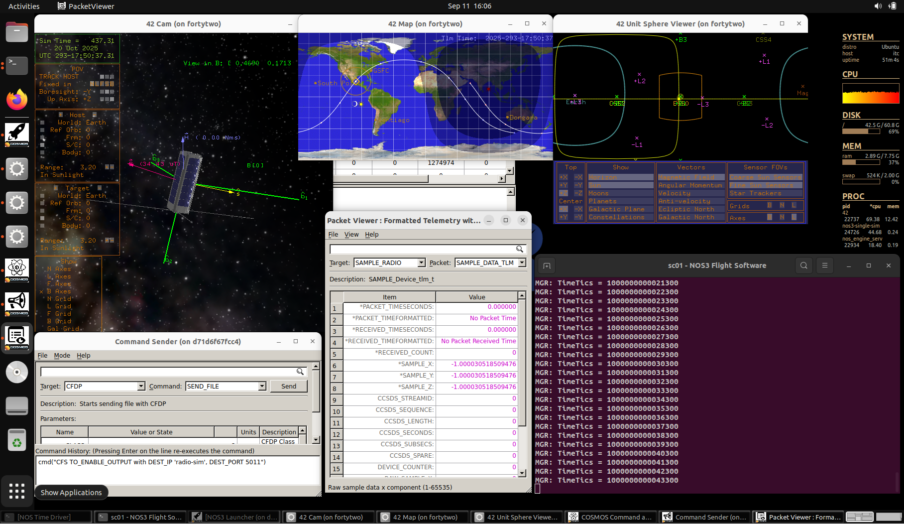
샘플 애플리케이션을 활성화하고 어떻게 되는지 살펴봅시다.
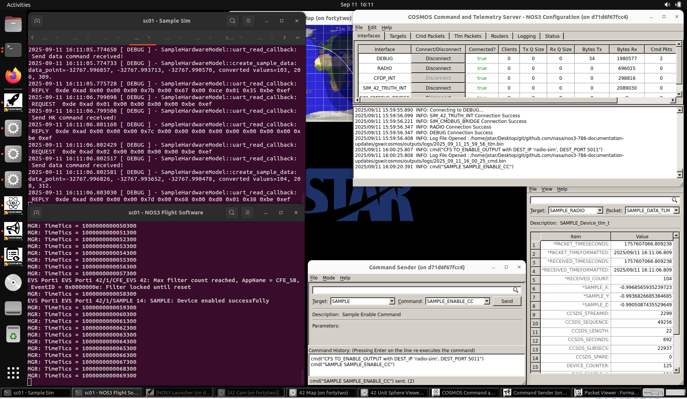
이제 샘플 시뮬레이터가 샘플 애플리케이션과 통신하고 있습니다:
샘플 애플리케이션은 정해진 주기로 장치에 데이터를 요청합니다.
좋습니다. 그럼 이제 일부러 무언가를 망가뜨려 볼까요?
Command Sender에서 SIM_CMD_BUS_BRIDGE 타겟으로 변경하세요.
이 인터페이스를 통해 시뮬레이터를 직접 명령할 수 있어서, 비행 소프트웨어가 어떻게 반응하는지 볼 수 있습니다.
상태값(status)을 5로 설정하는 SAMPLE_SIM_SET_STATUS 명령을 보내봅시다.
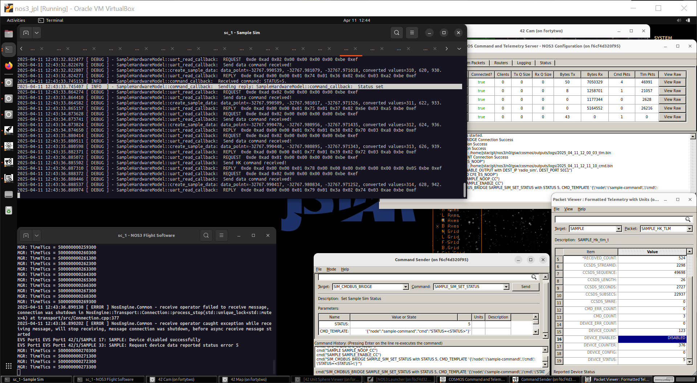
샘플 시뮬레이터에게 상태를 5로 바꾸도록 성공적으로 명령했습니다:
샘플 시뮬레이터가 상태 변경 명령을 수신한 것을 확인할 수 있습니다.
FSW 콘솔에는
Device disabled successfully와Request device data reported status error 5라는 메시지가 표시됩니다.샘플 컴포넌트 README를 살펴보면 그 이유를 알아낼 수 있습니다!
ADCS
샘플은 이 상태로 두고, 이제 자세결정 및 제어 시스템(Attitude Determination and Control System, ADCS)을 다뤄봅시다.
간단히 말해, ADCS는 다양한 컴포넌트(일반적으로 센서와 구동기(actuator)라고 부름)를 이용해 위성의 방향이나 궤도를 바꿉니다. 먼저 ADCS가 아무 동작도 하지 않도록 비활성화해서 자유롭게 만져봅시다:
만약 여러분이 일식(eclipse) 중이라면 위성이 태양의 위치를 모르기 때문에(추측할 만큼 똑똑하지 않음) 태양을 향할 수 없다는 점에 유의하세요.
Command Sender에서
GENERIC_ADCS의GENERIC_ADCS_SET_MODE_CC명령을GNC_MODEPASSIVE(0)로 보내세요.
위성이 더 심하게 흔들리는(tumbling) 것처럼 보이며, 이는 42 Cam에서 확인할 수 있습니다:
ADCS가 사용하는 여러 컴포넌트를 자유롭게 다루려면 ADCS를 passive로 명령하는 것이 중요합니다.
그렇지 않으면 ADCS가 1Hz마다 이 컴포넌트들에 텔레메트리를 요청하고 새 명령을 보내면서 우리와 충돌하게 됩니다.
GENERIC_REACTION_WHEEL의 GENERIC_RW_SET_TORQUE_CC 명령을 이용해 반작용휠(reaction wheel)이 회전하도록 명령하고 어떤 일이 일어나는지 봅시다:
동작하는 것 같습니다!
💡 초보자 가이드: 반작용휠(Reaction Wheel)은 위성 내부에서 회전하는 바퀴로, 이 바퀴를 빠르게 돌리거나 멈추면 그 반작용으로 위성 본체가 반대 방향으로 회전합니다. 피겨스케이트 선수가 팔을 몸에 붙이면 더 빨리 회전하는 원리와 비슷하게, 각운동량 보존 법칙을 이용한 장치입니다.
이번엔 음(negative)의 토크를 보내서 그 축에서 위성을 안정시킬 수 있는지 봅시다:
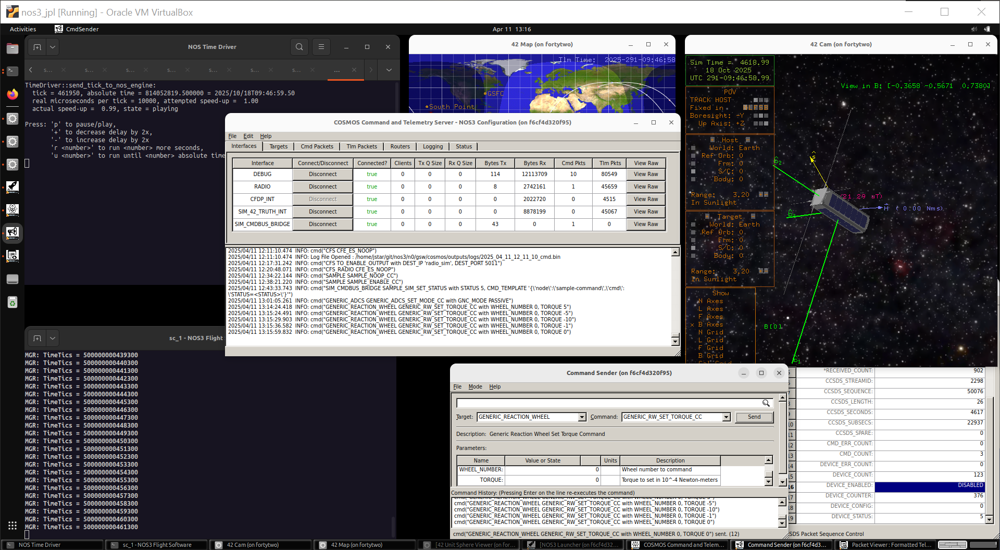
거의 다 됐지만, 수동으로 이걸 맞추기는 정말 어렵습니다.
만약 다시 태양 쪽에 있다면, ADCS를 다시 켜서 나머지 일을 대신 마무리해주는지 봅시다:
GENERIC_ADCS의GENERIC_ADCS_SET_MODE_CC를GNC_MODESUNSAFE_MODE(2)로 보내세요.
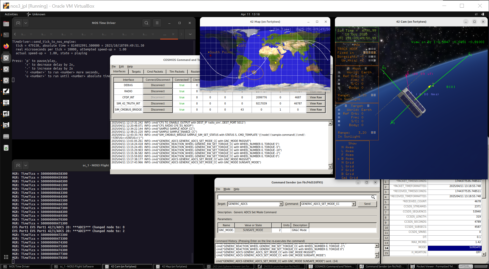
여기까지 잘 따라오셨다면 축하드립니다! 이제 여러분은 NOS3 위성 운영자입니다.